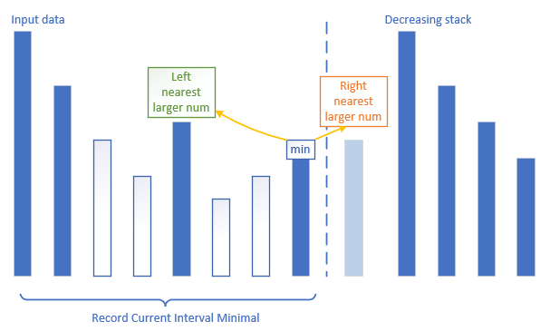
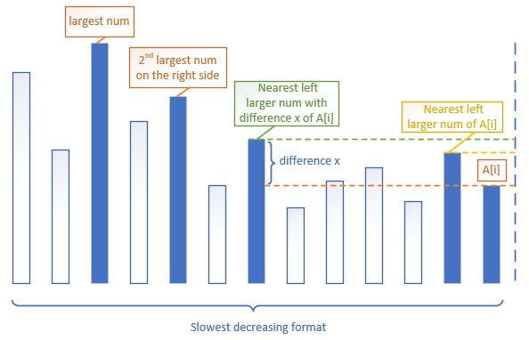
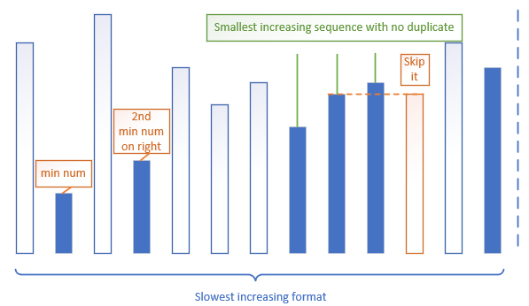
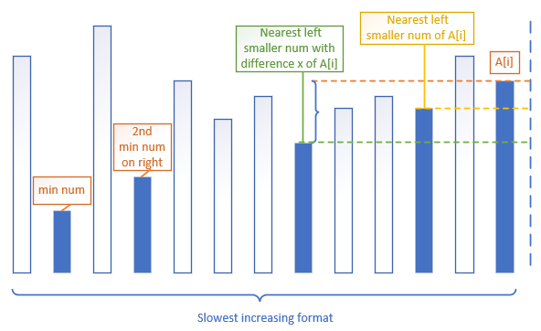

Monotonic Queue
A very strong data structure.
Definition
数据按照单调的方式加入，对于新加入的不满足单调形式的数据，踢除队列中原有的数据，使得当前的数据能满足单调性。其操作如下图:

Important observations:
单调栈维护区域最小(最大)值。
- 单调递增栈: 区域最小值
- 单调递减栈: 区域最大值
弹栈能找到当前元素的在栈元素区间的次大(次小)值
单调栈快速定位比当前元素大的最近的左右两个元素。如图所示

- 维护最慢增长(减少)的数字序列(字典序列)

- 维护最慢增长(减少)的不重复数字的序列(字典序列，利用hash判断存在就不进栈了)

- 维护距离当前元素最近的差距值为x的元素

单调递减栈: 两两栈元素A[i]和A[j]区间的元素大于max(A[i], A[j])
单调递增栈: 两两栈元素A[i]和A[j]区间的元素小于min(A[i], A[j])
Applications
基于这些特性，我们可以解决如下的问题。
Largest Rectangle in Histogram
问题: Given n non-negative integers representing the histogram’s bar height where the width of each bar is 1, find the area of largest rectangle in the histogram.
分析: 对于每一个柱体来说，我们需要找出左右第一个比其矮的数字，这样就可以确定包含当前柱体最大矩形面积。于是单调递增栈正好具备这个用法。虽然知道了使用单调栈的大方向，但是需要注意的细节有:
- 如果一个柱体左右没有比其矮的柱子，我们需要默认添加0的柱子
- 单调栈遇到相同的柱子并不能踢除
代码如下:
def largestRectangleArea(self, heights: List[int]) -> int:
heights.append(0)
max_gram, stack = 0, [-1]
for i in range(len(heights)):
while stack and heights[stack[-1]] > heights[i]:
idx = stack.pop()
max_gram = max(max_gram, heights[idx]*(i-stack[-1]-1))
stack.append(i)
return max_gram这里的代码设计，我们再heights中添加一个0的好处是，确保末尾有一个高度为0的柱子，能弹出单调栈所有的东西。其次，我们需要开始有一个位置-1高度为0的柱子，我们在stack初始化的时候添加[-1]，便确保了这个最初的高度为0的柱子可以被调用(利用最后一个为0，复用他们)
Remove K Digits
问题: Given a non-negative integer num represented as a string, remove k digits from the number so that the new number is the smallest possible.
分析: 实现单调栈的过程就已经删除了元素且形成最小的数字，所以直接应用单调递增栈。但是，需要注意的细节有:
- 如果删除元素的数量k超过数组长度，则直接反回0
- 如果删除元素的数量k大于单调栈形成最小数删除的数量，需要对形成的单调栈的进行尾部(栈顶)删除。
- 单调栈保留相同的元素。
代码如下:
def removeKdigits(self, num: str, k: int) -> str:
if k >= len(num): return '0'
stack, cnt = [], 0
for i in range(len(num)):
while stack and stack[-1] > num[i] and cnt < k:
stack.pop()
cnt += 1
stack.append(num[i])
return str(int(''.join(stack[:len(stack)-(k-cnt)])))这里利用cnt计数，实现了对需要删除的数量统计。
Remove Duplicate Letters
问题: Given a string s, remove duplicate letters so that every letter appears once and only once. You must make sure your result is the smallest in lexicographical order among all possible results.
分析: 利用单调栈求最慢增长序列的性质。 由于没有重复元素，于是需要对于已经出现的元素进行保留，利用hash查询。
- 当前元素可以被踢除的必要条件是，其在后续会出现
代码如下:
def removeDuplicateLetters(self, s: str) -> str:
pos = {s[i]:i for i in range(len(s))}
stack, stored = [], set([])
for i in range(len(s)):
if s[i] in stored:
continue
while stack and ord(stack[-1]) >= ord(s[i]) and pos[stack[-1]] >= i:
stored.remove(stack.pop())
stack.append(s[i])
stored.add(s[i])
return ''.join(stack)132 Pattern
问题: Given an array of n integers nums, a 132 pattern is a subsequence of three integers nums[i], nums[j] and nums[k] such that i < j < k and nums[i] < nums[k] < nums[j]. Return true if there is a 132 pattern in nums, otherwise return false.
分析: 两种思路，一般会先想到，遍历3，定1再找2，对于每一个i元素13很好找，因为3可以认为是最大的元素，但是2就需要遍历了。这样无法做到线性时间。所以，转而回到另一种思路，遍历3，定2再找1。其中对于每一个3来说，其最好的2就是次大元素，然而如何快速找到次大元素，而不是O(n)的遍历。这里的关键是，利用逆序单调递减栈的弹栈特点，弹栈元素必有次大，接下来的问题就是分析，这个local次大是否能代替global次大的作用。假设当前为nums[i]，栈顶元素为s[-1]，讨论如下:
nums[i]<s[-1]， 入栈。这是由于单调递减栈，两两元素间隔的元素一定大于其最大，nums[i]左边的元素一定没有小它的。nums[i]>=s[-1]，能在弹栈的时候找到一个次大nums[i]的数，定为其对应的2。- 反证: 对于
nums[i]的次大数来说，假设在s[-1]之左边还有比其大的次大值s[-1]'。那么，s[-1]，s[0]，s[-1]'，已经构成132pattern.
- 反证: 对于
这样我们就确定了，单调栈弹栈的local次大能代替global次大，代码如下。
def find132pattern(self, nums: List[int]) -> bool:
stack, _2nd_largest = [], -sys.maxsize
for i in range(len(nums)-1,-1,-1):
if nums[i] < _2nd_largest:
return True
while stack and stack[-1] < nums[i]:
_2nd_largest = stack.pop()
stack.append(nums[i])
return False代码的细节中，因为每次次大找到，所以只用判定新元素是否小于次大则return True。
Shortest Subarray with Sum at Least K
问题: Return the length of the shortest, non-empty, contiguous subarray of A with sum at least K. If there is no non-empty subarray with sum at least K, return -1.
分析: 因为是nearest的differecen至少为K，直接利用单调栈的性质，这里我们维护一个单调队列即可。细想一下，对于每一个元素，其最近距离至少为k的值就是单调队列维护的元素。注意点就是，因为求最短，需要实时踢除队列头部元素即可。
代码如下:
def shortestSubarray(self, A: List[int], K: int) -> int:
preSum, min_len, q = [0], sys.maxsize, collections.deque([])
for e in A:
preSum.append(preSum[-1] + e)
for i in range(len(preSum)):
while q and preSum[q[-1]] > preSum[i]:
q.pop()
while q and preSum[i] - K >= preSum[q[0]]:
min_len = min(min_len, i-q.popleft())
q.append(i)
return min_len if min_len != sys.maxsize else -1Longest Continuous Subarray With Absolute Diff
问题: Given an array of integers nums and an integer limit, return the size of the longest non-empty subarray such that the absolute difference between any two elements of this subarray is less than or equal to limit.
分析: 利用单调栈能记录区间最大，最小值的性质。维护两个单调队列，且当队列头的diff超过limit的时候，踢除队头元素。这里第二个运用单调队列的性质是，单调递增，任意队列两元素之间的值必然大于其俩最大值，于是左指针停留在最后一个被踢的位置加1。
代码如下:
def longestSubarray(self, nums: List[int], limit: int) -> int:
ascend, descend, max_len, j = collections.deque(), collections.deque(), 0, 0
for i in range(len(nums)):
while ascend and nums[ascend[-1]] > nums[i]:
ascend.pop()
while descend and nums[descend[-1]] < nums[i]:
descend.pop()
ascend.append(i)
descend.append(i)
while abs(nums[ascend[0]]-nums[descend[0]]) > limit:
j = min(ascend[0], descend[0]) + 1
if ascend[0] > descend[0]:
descend.popleft()
else:
ascend.popleft()
max_len = max(max_len, i-j+1)
return max_len[烽火]https://blog.csdn.net/zxzxzx0119/article/details/81662792
本博客所有文章除特别声明外，均采用 CC BY-SA 4.0 协议 ，转载请注明出处！